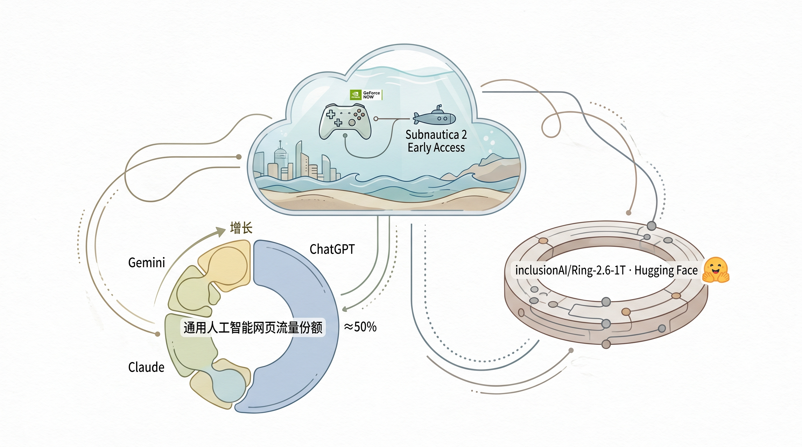

NVIDIA GeForce NOW平台推出《Subnautica 2》游戏，支持云游戏服务。
两克伴AIGC日报
2026-05-15 星期五

本期关注：AI市场格局向多极化演进，ChatGPT接近50%份额，Claude与Gemini持续增长；Hugging Face发布1万亿参数开源模型Ring-2.6-1T，推动开源AI突破；Reference-Guided Flow Matching等新算法提升生成模型性能，技术与应用加速落地。
📰 行业动态
🔥 今日焦点
最新的AI网络流量份额数据显示，ChatGPT正逐步接近50%的市场份额，而Claude和Gemini则持续增长。一年前，ChatGPT占据77.6%的市场，Gemini仅7.27%；六个月前，ChatGPT降至69.5%，Gemini增长至15.9%。这表明AI市场正从一家独大向多极化发展，用户开始根据不同需求选择合适的AI助手。Gemini的快速增长尤其值得关注，它已经从边缘玩家成为ChatGPT最强劲的竞争对手。这种市场格局的变化，意味着AI公司需要更精准的产品定位和差异化竞争策略。
***
📚 深度长文
🐦 Ta们说
> "Last month Salesforce announced it would open its APIs and launch a headless product, essentially betting that in an agentic world, its value lies in the data layer, not the UI.
The announcement is a useful prompt for a more interesting question: if you strip away the UI and expose the database, what are you actually left with?
> "Most people see the things around them without considering the forces that created them. In most cases those forces were specific people with specific qualities who worked in specific ways. Change the people and you change how things develop; replace creators with noncreators and you stop having creations. #principleoftheday"
**解读**: Ray Dalio 强调创造者决定事物发展的本质。这个观点在AI领域特别有启发性——当AI开始'创造'时，背后人类创造者的价值观和能力将直接影响AI产出的质量和方向，这也是AI安全问题的核心。
📄 重点论文
**核心贡献**: 提出了一种结合结构化意见动力学和基于LLM的智能体推理的认知基础模拟框架，旨在解决现有方法中认知基础不足或LLM交互过于自由的问题。
**与AI Agent的关联**: 为AI Agent的社会交互和认知建模提供了新的思路，有助于提升智能体在社会环境中的适应性和决策能力。
**核心贡献**: 研究了全模态LLM在处理文本前提与感知输入不一致时的失败原因，提出了一个用于评估此类问题的基准。
**与AI Agent的关联**: 揭示了全模态LLM在感知和行动上的局限性，对智能体在多模态交互中的表现和设计提供了新的理解。
🛠️ 产品推荐
Show HN: Full Stack HQ – Claude.md和Agent Stack for Claude Code是一款基于MIT许可的配置工具，专为Claude Code和Google Antigravity IDE设计。通过一键安装，用户可快速搭建CLAUDE.md、GEMINI.md以及10个专业代理和28项技能，极大提高工作效率。该产品以“权限优先”配置理念为核心，为技术从业者提供便捷、高效的开发环境，有效解决开发过程中配置复杂、效率低下等问题。
***
Show HN: Parse LLM Markdown streams incrementally on the server or client是一款针对AI聊天应用中Markdown文本流式解析的优化工具。该产品通过实现Markdown文本的（半）增量解析，有效解决了传统前端重解析整个文档导致的UI渲染缓慢问题。它能够显著提升长响应文本的渲染效率，为用户带来更流畅的交互体验。该产品具备AI能力，通过创新解析方式，为技术从业者提供了一种高效、便捷的Markdown处理解决方案。
***